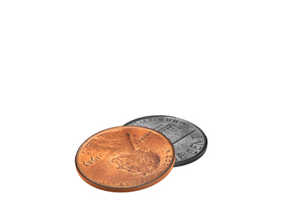

Jory Rabinovitz
Eighty Three
April 18 - May 31, 2014
Opening reception: Friday, April 18, 6 - 8 pm
In 1983, the U.S. government began minting pennies with a ratio of 97.5% zinc and 2.5% copper—an inverse of the previous formula of 95% copper and 5% zinc. The coin had become increasingly more valuable as a commodity of copper than as the molecule of a fiat currency. This decision would ensure to repress speculative desires to hoard, melt and debase the coin. Martos Gallery is pleased to present Eighty Three, a solo exhibition of new works by Jory Rabinovitz, on view from April 18 through May 31 with an opening reception on
Friday, April 18 from 6 - 8 pm.
For additional information please email info@martosgallery.com or call 212-560-0670
Martos Gallery
540 West 29th Street
New York, NY
10001
212-560-0670